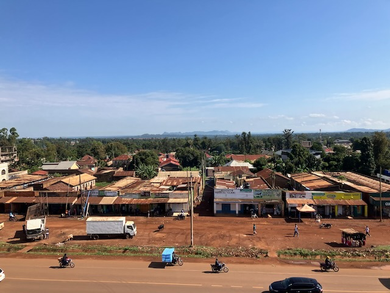

During my postdoc, I was fortunate to work with the Kenya Life Panel Survey (KLPS) (KLPS). KLPS is a longitudinal study that follows individuals in Kenya who were originally part of the deworming study conducted by Edward Miguel and Michael Kremer (Econometrica, 2004). Over time, the project has expanded to include a broad set of modules capturing economic, behavioral, and cognitive outcomes, with more recent rounds incorporating a growing focus on health and aging. KLPS has now completed five survey rounds, each consisting of several visits, so that a single round is typically conducted over multiple years.
All data are publicly available through the Harvard Dataverse. As such, KLPS is a valuable resource for graduate students and researchers working with limited resources. Additional details are available on the KLPS website and in the cohort profile by Hsu et al. (2026).

Busia Town in Kenya, 2025.
© Lexi Schubert